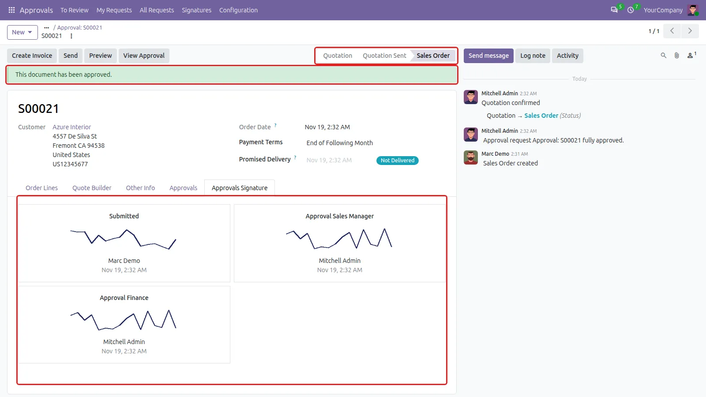
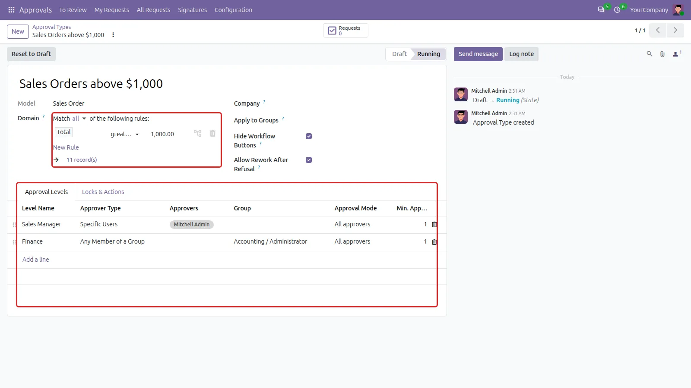
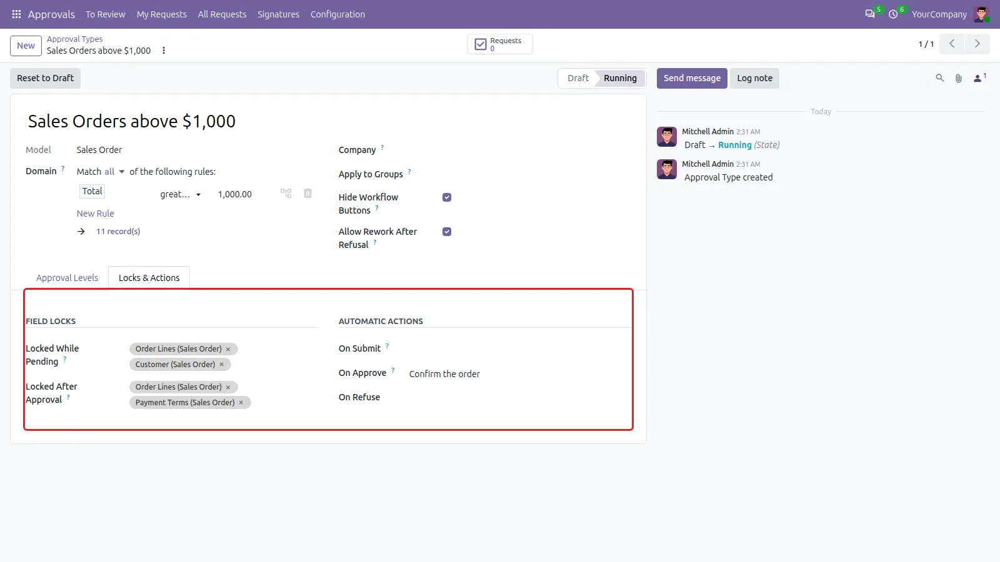
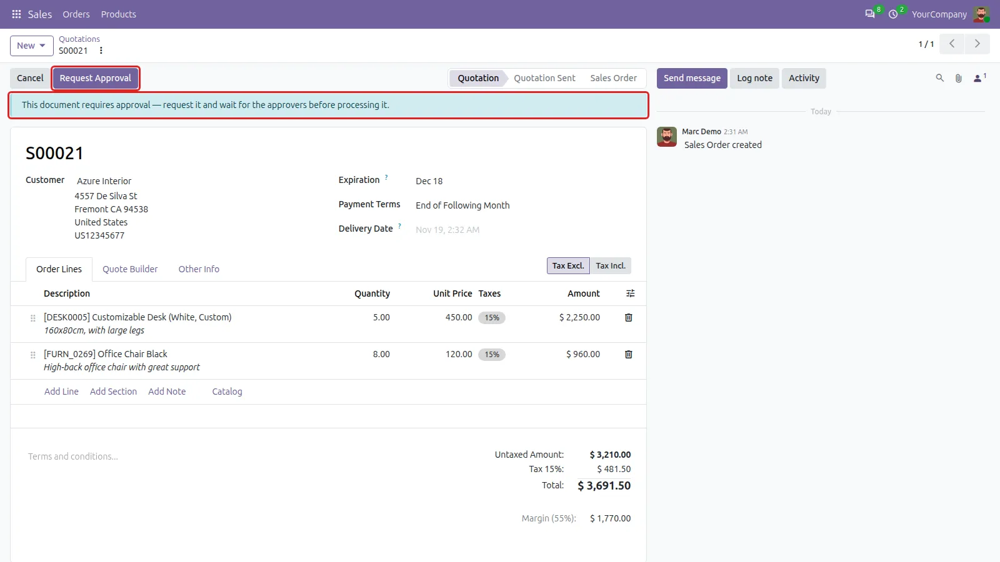
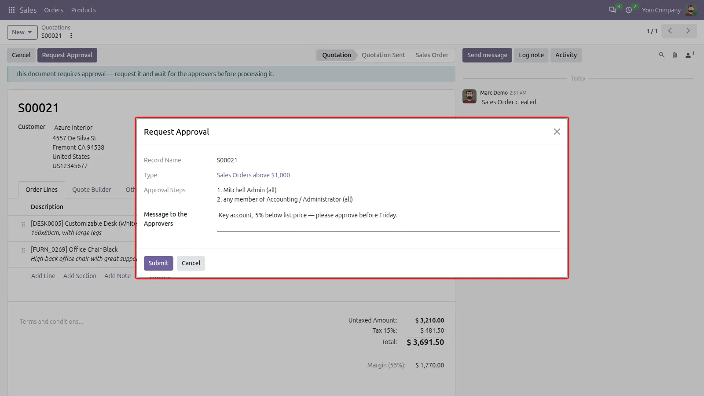
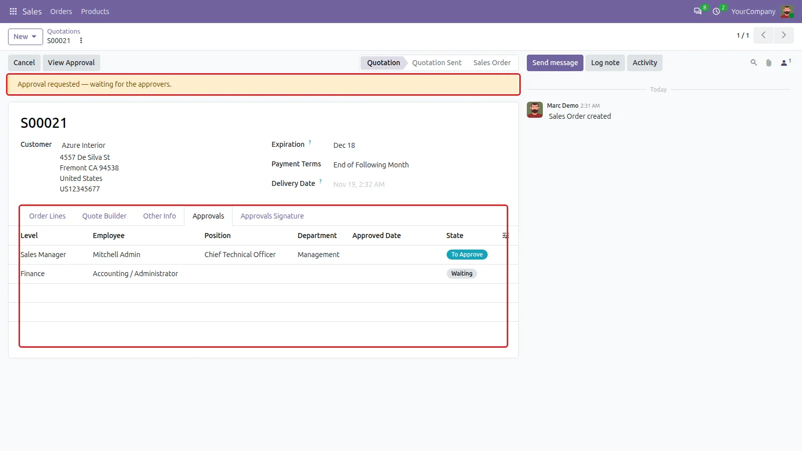
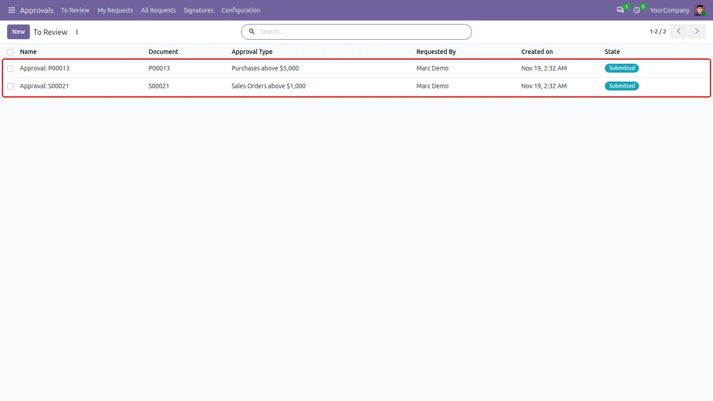
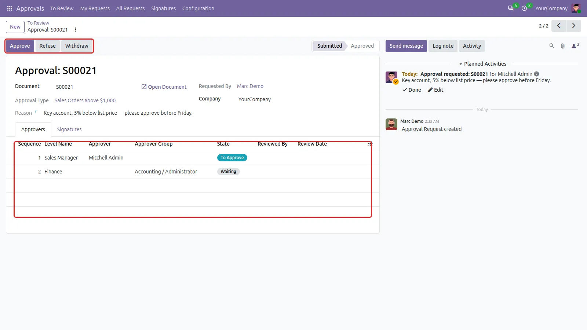
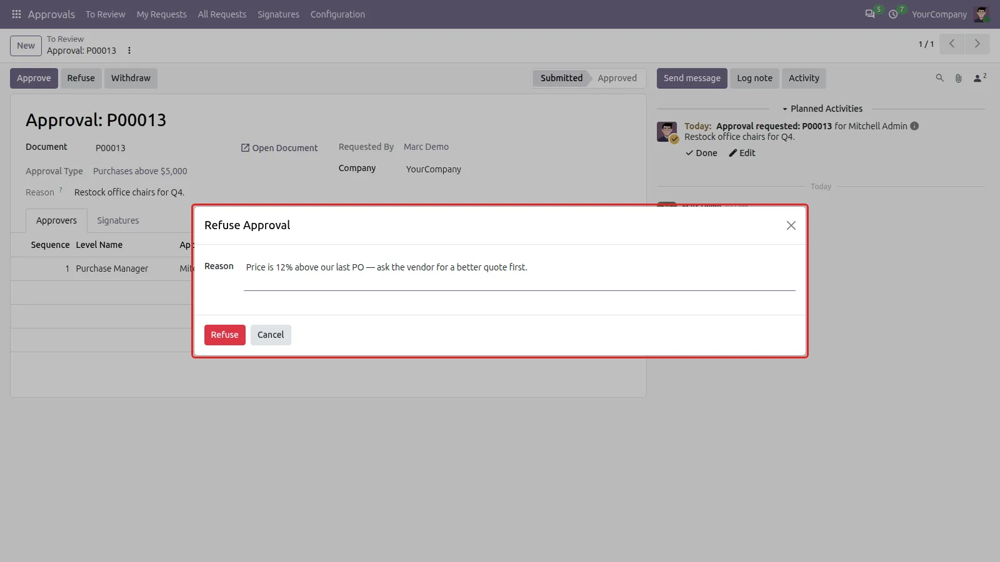
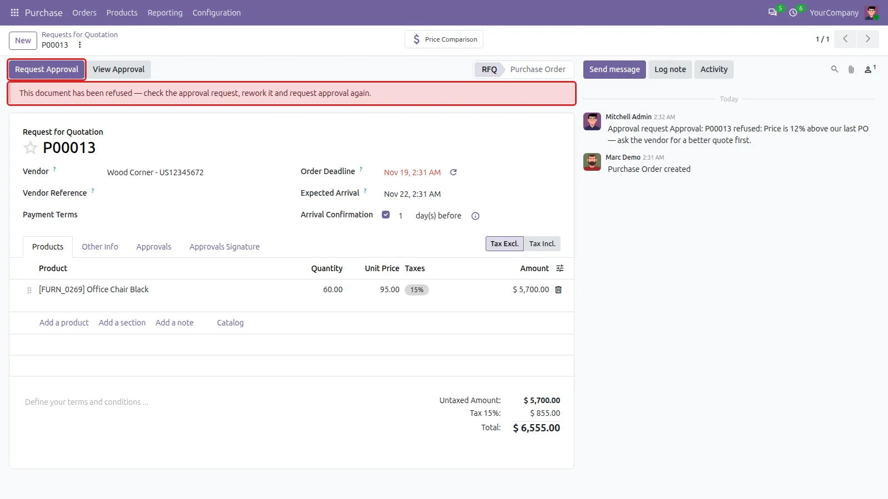

Approval Workflow - Multi Level Approval on Any Model
Dynamic approval workflow on any model without code: multi level approval with conditions, approvers per level, hidden buttons, field locking and signatures.
- Price
- $69
- Odoo versions
- 17.0
- 18.0
- 19.0
- 20.0
- Technical name
tamadoo_approval_engine- License
- OPL-1
Odoo 20.0: not listed on the store yet. Ask at tama.odoo@gmail.com.

Text and screenshots below are from the Odoo 20.0 version of this module.
Multi-level approvals on any Odoo model. Choose the model, the condition and the approvers, and the approval flow is added to the form. Workflow buttons are hidden until approval, fields are locked and signatures are stamped at every step.

One engine for every approval
Most approval apps cover a single document type. This one works on any model, and each approval flow is configured in a form instead of written as code.
Any model, any condition
Sales, purchases, invoices, expenses, partners or your own models. A domain decides which records need approval.
Ordered levels
Specific users, the requester's manager or any member of a group. Each level can require all approvers, any one of them, or a minimum number.
Locks that hold
Workflow buttons stay hidden until approval. Chosen fields are locked while pending or after approval, and the lock is enforced on the server.
Automatic actions
Run a server action on submit, on approval (e.g. confirm the order) or on refusal.
Signatures
Each user draws a signature once. It is stamped on submission and on every approval, and can be printed on any report.
Refuse & rework
Refusals need a reason. The requester can fix the document and ask again, or you can make a refusal final.
Step by step
1. Define an approval type
Approvals → Configuration → Approval Types: the model, the condition and the approval levels.

2. Lock fields and automate, then Activate

3. The document asks for approval
Confirm and Send are hidden. The requester sees a Request Approval button instead.

4. Request with a message

5. Track every level on the document

6. Approvers review


7. Approved: the order is confirmed and signed

8. Or refused, with a reason


Set up in 2 minutes
- Approvals → Configuration → Approval Types → New: pick the model and set the condition.
- Add the approval levels: users, the requester's manager or a group.
- Optionally lock fields and choose the actions to run on submit, approve or refuse.
- Click Activate. Matching documents now show Request Approval.
Requirements: Odoo 20.0, depends on mail only. With HR installed, the approvers'
position and department are shown and the requester's manager can be an approval level.
Print signatures on any report with
<t t-call="tamadoo_approval_engine.report_signature_block"/>.
Get Approval Workflow
Odoo 20.0: not listed on the store yet. Ask at tama.odoo@gmail.com.
Questions before buying? Write to tama.odoo@gmail.com.